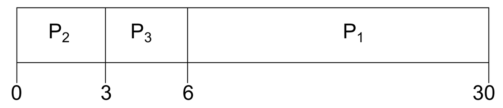
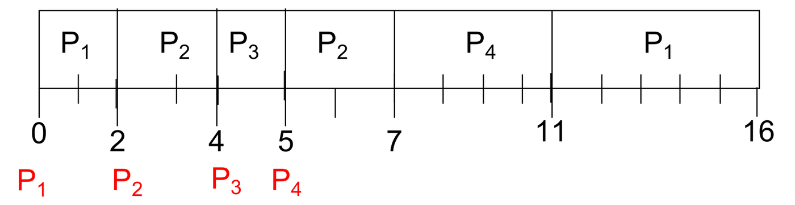
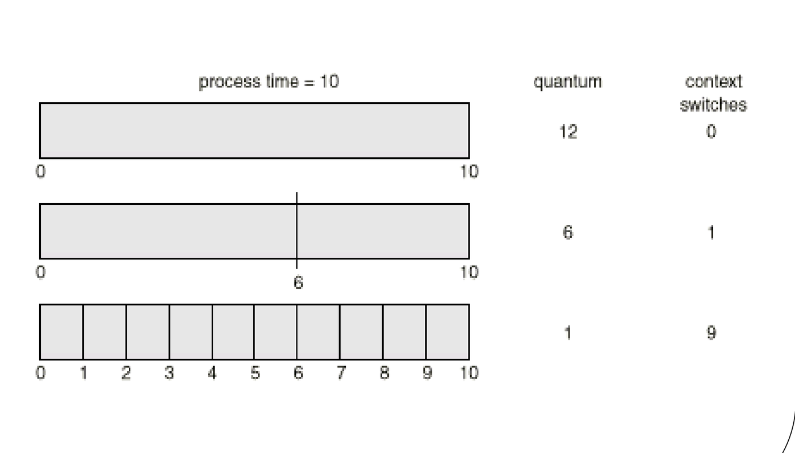
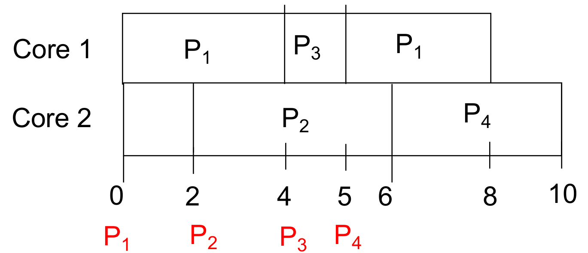

This was written entirely with AI.
1. Why the OS Needs a Scheduler
1.1 CPU bursts and I/O bursts
A process does not use the CPU all the time. It does some computing, then it waits for I/O, then it computes again:
- A CPU burst is one period of computing.
- An I/O burst is one period of waiting for I/O.

While one process is in an I/O burst, the CPU has nothing to do for it. With multiprogramming (Lecture 1), the OS gives the CPU to another process in that time. The goal of CPU scheduling is to keep the CPU as busy as possible.
This lecture studies the short-term scheduler. It selects a process from the ready queue and gives it a CPU core. One core runs one process at a time.
1.2 When the scheduler must run
The scheduler can run whenever a process changes state. The lecture numbers five transitions:

| Number | Transition | Cause |
|---|---|---|
| 1 | Running → Waiting | The process asks for I/O or waits for an event |
| 2 | Running → Ready | An interrupt |
| 3 | Waiting → Ready | The I/O or the event finishes |
| 4 | New → Ready | A new process arrives (is admitted) |
| 5 | Running → Terminated | The process exits |
Which transitions force the scheduler to run? Only 1 and 5. In both cases, the running process leaves the CPU, so the core becomes idle. The scheduler must pick a new process, or the core stays idle.
In transitions 2, 3 and 4, a process can continue to run. The scheduler may run, but it does not have to. (Exception: transition 4 on an idle core. If no process runs and a new one arrives, the scheduler should run to use the idle core.)
1.3 Preemptive and nonpreemptive scheduling
This difference comes directly from the transitions:
- Nonpreemptive. Once a process has the CPU, it keeps it until it gives it up itself: it finishes, or it waits for I/O or an event. The scheduler runs only at transitions 1 and 5 (and 4 on an idle core).
- Preemptive. The scheduler can take the CPU away from a running process at any time. The scheduler also runs at transitions 2, 3 and 4, or at any other moment.
The word preempt means “take the CPU away from a process that still wants to run”.
2. How to Measure a Scheduler
2.1 System-wide measures (make these large)
- CPU utilization: the percentage of time that the cores run processes.
- Throughput: the number of processes that finish in each unit of time. In other words, the number of “exit” transitions in each unit of time.
2.2 Measures for each process (make these small)
Three times describe what one process experiences:

- Turnaround time: from the moment the process arrives (is admitted) to the moment it finishes. It includes everything: running, waiting for I/O, and waiting in the ready queue.
- Waiting time: the total time that the process spends in the ready queue. Time in an I/O burst does not count as waiting time. The scheduler cannot shorten it.
- Response time: from arrival to the first time the process runs.
For the whole system, take the average of each time over all processes.
In this lecture, the examples assume each process has one CPU burst and no I/O, unless the question says otherwise. Then:
2.3 How to read a Gantt chart
A Gantt chart is a time line. Each box shows which process runs on the core, from the start time to the end time below the box.

To find the measures from a Gantt chart:
- Read the finish time of each process: the end of its last box.
- Turnaround = finish time − arrival time.
- Waiting = turnaround − burst time (with one CPU burst and no I/O).
- Response = start of its first box − arrival time.
In the chart above, P2 arrives at 0, and its box goes from 24 to 27. So P2 finishes at 27, its turnaround is 27 − 0 = 27, its waiting time is 27 − 3 = 24, and its response time is 24 − 0 = 24.
3. Scheduling Algorithms for One Core
3.1 First-come, first-served (FCFS)
Rule: run the processes in the order they arrive. Each process runs until its burst ends.
FCFS is nonpreemptive: a process gives up the CPU only when it finishes or waits.
Example (slides 3.11–3.12). Three processes arrive at time 0 with bursts P1 = 24, P2 = 3, P3 = 3.
- Order P1, P2, P3: the chart is P1 (0–24), P2 (24–27), P3 (27–30). Waiting times 0, 24 and 27. Average = 17.
- Order P2, P3, P1: the chart is P2 (0–3), P3 (3–6), P1 (6–30). Waiting times 6, 0 and 3. Average = 3.

The same processes give very different averages. The cause is the convoy effect: short processes wait behind one long process that arrived first, like cars behind a slow truck.
3.2 Shortest job first (SJF) and shortest remaining time first (SRTF)
Idea: run the process with the shortest CPU burst first. This fixes the convoy effect.
There are two versions:
- SJF (nonpreemptive). When the core becomes free, pick the ready process with the shortest burst. It runs to the end of its burst.
- SRTF (preemptive SJF). When a new process arrives, compare its burst with the remaining burst of the running process. If the new burst is shorter, preempt the running process.
SJF/SRTF gives the lowest possible average waiting time. Every time a short job goes before a long job, the short job saves more waiting than the long job loses.
Example (slides 3.15–3.16). Arrival time and burst: P1 (0, 7), P2 (2, 4), P3 (4, 1), P4 (5, 4).
Nonpreemptive SJF:
- At 0, only P1 is ready. P1 runs 0–7.
- At 7, P2, P3 and P4 are ready. The shortest is P3: 7–8. Then P2 and P4 both have 4. P2 arrived first: 8–12. Then P4: 12–16.
- Waiting: P1 = 0, P2 = 8 − 2 = 6, P3 = 7 − 4 = 3, P4 = 12 − 5 = 7. Average = 4.

SRTF:
- At 0, P1 runs. At 2, P2 arrives with 4. P1 has 5 left. 4 < 5, so P2 preempts P1.
- At 4, P3 arrives with 1. P2 has 2 left. 1 < 2, so P3 preempts P2. P3 runs 4–5.
- At 5, P4 arrives with 4. P2 has 2 left, P1 has 5 left. P2 runs 5–7. Then P4 runs 7–11, and P1 runs 11–16.
- Waiting: P1 = 16 − 0 − 7 = 9, P2 = 7 − 2 − 4 = 1, P3 = 0, P4 = 11 − 5 − 4 = 2. Average = 3.

SRTF has the lower average here, because it can react to short jobs that arrive later.
The weakness of SJF: the OS must know the length of the next CPU burst in advance. In a real system it can only estimate it.
3.3 Priority scheduling
Rule: each process has a priority number. The CPU goes to the process with the highest priority. Usually, a smaller number means a higher priority. Priority scheduling can be preemptive or nonpreemptive.
FCFS and SJF are special cases of priority scheduling:
- FCFS: the priority is the arrival order.
- SJF: the priority is the burst length.
Problem: starvation. In a busy system, high-priority processes keep arriving. A low-priority process may never run.
Solution: aging. The OS slowly raises the priority of a process the longer it waits. Finally, it becomes the highest priority and runs.
3.4 Round robin (RR)
Rule: each process runs for at most a fixed
time quantum q. If it has not finished,
the OS preempts it and puts it at the end of the ready
queue. The processes take turns in a cycle. RR is preemptive. Usually
q is 10–100 ms.
Property: with n processes in the ready
queue, no process waits more than
before its next turn. So RR gives good response
time.
The choice of q matters:
- Large
q: each process finishes its burst before the quantum ends. RR becomes FCFS. - Small
q: many context switches. Each switch is overhead, so the CPU spends more time switching and less time on work.

Average turnaround time and q have no simple
relation. The graph goes up and down as q changes.
But once q is larger than the longest CPU burst, the
average turnaround time stays the same, because RR is then FCFS.

Example (slide 3.19). Four processes arrive at time 0 in the order P1, P2, P3, P4 with bursts 53, 17, 68 and 24. With q = 20, the chart is:

P2 needs only 17, so it finishes before its quantum ends, and the next process starts at once at 37.
Compared with SJF, RR usually has a higher average waiting and turnaround time, but a better response time.
3.5 Multilevel queue scheduling
Different processes need different things:
- Foreground (interactive) processes need fast response. RR suits them.
- Background (batch) processes do not need fast response. FCFS suits them, because it has little overhead.
Multilevel queue scheduling divides the ready queue into several queues. Each queue has its own algorithm. Then the OS must also decide which queue gets the CPU. There are two ways:
- Fixed priority: serve the queues in priority order, for example foreground before background. Problem: the low-priority queues can starve.
- Time slices: give each queue a fixed share of CPU time, for example 80 ms for foreground, then 20 ms for background, and repeat.
3.6 The one-core algorithms side by side
| Algorithm | Preemptive? | Strength | Weakness |
|---|---|---|---|
| FCFS | No | Simple; low overhead | Convoy effect |
| SJF | No | Lowest average waiting time (nonpreemptive) | Must know burst lengths; long jobs can starve |
| SRTF | Yes | Lowest average waiting time overall | Must know burst lengths; long jobs can starve |
| Priority | Either | Important work first | Starvation (fix: aging) |
| RR | Yes | Good response time; fair | Higher average waiting; overhead if q is small |
| Multilevel queue | Depends on each queue | Different policies for different types of process | Lower queues can starve with fixed priority |
4. Scheduling on Many Cores
Now the CPU has several cores. Each process can run on only one core at a time. There are two approaches.
4.1 Partitioned scheduling (asymmetric multiprocessing, AMP)
- When a process is created, the OS assigns it to one core. The process always runs on that core.
- Each core has its own ready queue and its own one-core scheduler. Different cores can use different algorithms.
Advantage: it is simple. It is the one-core scheduling from section 3, applied to each core.
Problem: how to assign processes to cores. A poor assignment gives unequal loads: one core is idle while another is overloaded. The best assignment is an NP-hard problem, similar to the knapsack problem. If the burst lengths are known, a heuristic such as best-fit can help.
4.2 Global scheduling (symmetric multiprocessing, SMP)
- There are one or more ready queues for the whole system. No queue belongs to a core.
- When any core becomes idle, the scheduler gives it the next process, with one rule for all cores (FCFS, SJF and so on).
- A process can run on different cores at different times.
Advantage: there is no assignment problem. No core stays idle while processes are ready.
Problems:
- More complex. The cores must synchronize their clocks, and the scheduler must decide for all cores together.
- More overhead. A process can stop on one core and continue on another. This is migration. The data in the private cache of the first core is then not useful, and must move.
Migration overhead is a problem of global scheduling only. In partitioned scheduling, processes never move between cores.
| Partitioned (AMP) | Global (SMP) | |
|---|---|---|
| Ready queues | One for each core | Shared by all cores |
| Can a process move between cores? | No | Yes |
| Main problem | Unequal loads (assignment is NP-hard) | Complexity and migration overhead |
| Each core can use its own algorithm? | Yes | No: one rule for all cores |
4.3 How to draw a global schedule
In a global schedule, at each moment, the scheduler picks the best ready processes for all free cores together. With two cores, the two best ready processes run.
Example (slide 3.28): SRTF on two cores. P1 (0, 7), P2 (2, 4), P3 (4, 1), P4 (5, 4).
- At 0, P1 runs on core 1. Core 2 is idle.
- At 2, P2 arrives. Core 2 is free, so P2 runs there. No preemption is necessary.
- At 4, P3 arrives with 1. Both cores are busy: P1 has 3 left, P2 has 2 left. P3 preempts the process with the longest remaining time, P1. P3 runs 4–5 on core 1.
- At 5, P3 finishes and P4 arrives. P1 (3 left) and P4 (4) wait. P1 goes on core 1. At 6, P2 finishes on core 2, and P4 starts there.
- Waiting: P1 = 1, P2 = 0, P3 = 0, P4 = 1. Average = 0.5.

Example (slide 3.29): RR with q = 20 on two cores. The processes are the same as in the one-core RR example: P1, P2, P3 and P4 arrive at time 0 in that order, with bursts 53, 17, 68 and 24. When a quantum ends, the process goes to the end of the shared ready queue. The next free core takes the process at the head of the queue. So a process can continue on a different core: P1 runs on core 1 (0–20), then on core 2 (37–57), then on core 1 again (60–73).

What You Know Now (Lecture 3)
- The scheduler must run when a process waits (transition 1) or exits (transition 5). Preemptive scheduling also runs at other times.
- Turnaround = finish − arrival. Waiting = time in the ready queue. Response = first run − arrival.
- FCFS has the convoy effect. SJF/SRTF gives the lowest average waiting time but needs burst lengths. Priority can starve processes; aging fixes it. RR gives good response time; a large quantum turns it into FCFS.
- Multilevel queues use a different algorithm for each queue.
- Partitioned scheduling fixes each process to a core and risks unequal loads. Global scheduling shares one queue and pays for migration.